シジュウカラ
野幌森林公園に生息している代表的な野鳥のひとつ。一年を通してみられる。 お腹にある黒ネクタイが特徴的。鳴き方で人間のように文法をつくり、 他個体とコミュニケーションをとる。
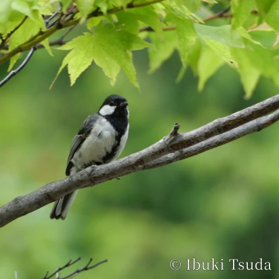
野幌森林公園に生息している代表的な野鳥のひとつ。一年を通してみられる。 お腹にある黒ネクタイが特徴的。鳴き方で人間のように文法をつくり、 他個体とコミュニケーションをとる。
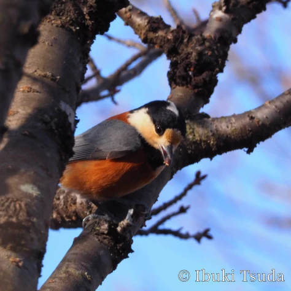
野幌森林公園に生息している代表的な野鳥のひとつ。一年を通してみられる。 日本を含め、アジア圏にしか生息していない。平安時代から江戸時代にかけては、 愛玩鳥としても親しまれていた。
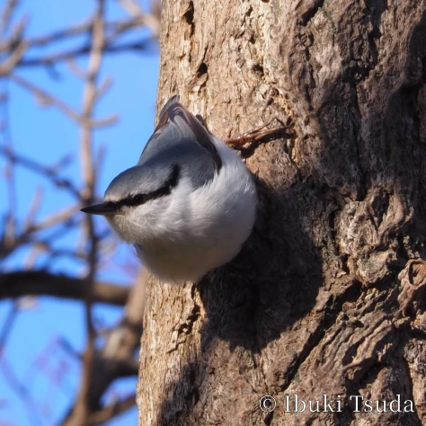
野幌森林公園に生息している代表的な野鳥のひとつ。一年を通してみられる。 逆さまになって木の幹を飛び回る。ほかのカラ類とはさえずりが大きく異なる。 また、混群をつくることもある。
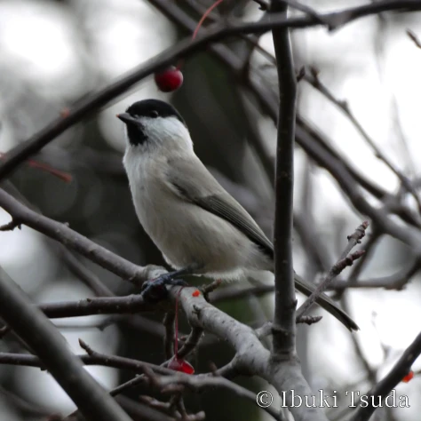
野幌森林公園に生息している代表的な野鳥のひとつ。一年を通してみられる。 白い体に黒のベレー帽をかぶり付け髭を身にまとったような見た目。 コガラとハシブトガラの識別は非常に困難。
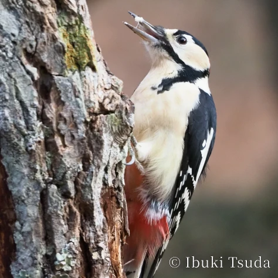
野幌森林公園に生息している代表的な野鳥のひとつ。一年を通してみられる。 ここではキツツキで最も代表的な種。黒と白を基調に、赤いワンポイントの羽が特徴的。
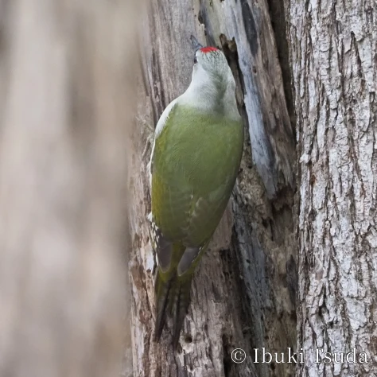
野幌森林公園に生息している野鳥のひとつ。一年を通してみられる。 日本では北海道にのみ生息するキツツキの一種。 全体的に緑がかった体が特徴。本州には似た種に「アオゲラ」がいる。
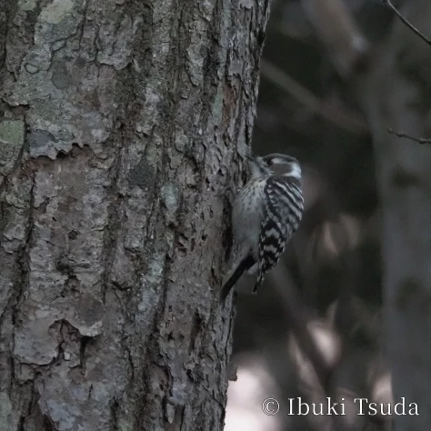
野幌森林公園に生息している野鳥のひとつ。一年を通してみられる。 キツツキの一種で、とても小さい。体が小さくても生態はキツツキ。 木の幹や枝をつついて飛び回る。
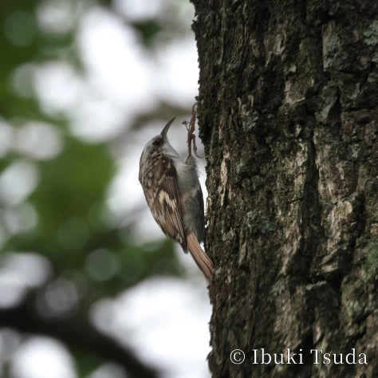
野幌森林公園に生息している野鳥のひとつ。一年を通してみられる。 木の幹や枝を素早く飛び回る。ここから「木走」という名がついたといわれる。 少し曲線の嘴が特徴的。
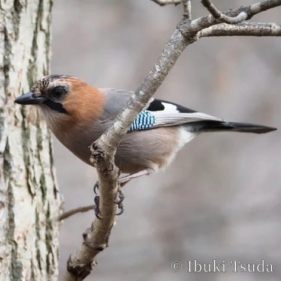
野幌森林公園に生息している野鳥のひとつ。一年を通してみられる。 分類上カラスの仲間で、大きさも同じくらい。 カラスの仲間とはいえ、オレンジ色の顔, 灰, 青, 白, 黒のカラフルな羽など、それなりに美しい鳥。
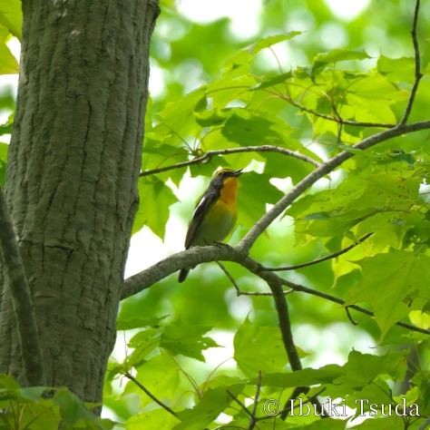
野幌森林公園に生息している野鳥のひとつ。春から夏にかけてみられる。 オスの個体は眉や胸周りなど黄色い羽根が特徴的。メス個体はもう少し素朴な配色である。 とても美しいさえずりを持つ。
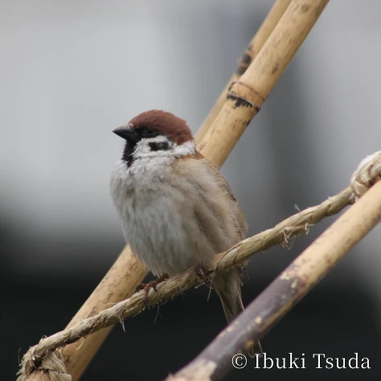
野幌森林公園やその周辺の住宅街に生息している。一年を通してみられる。 “チュンチュン”でおなじみで、街中でもよく見かけることができる。 似た種として森林によく生息する「ニュウナイスズメ」がいる。
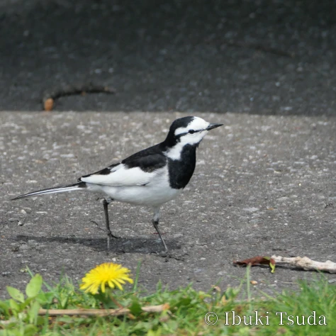
野幌森林公園やその周辺の住宅街に生息している。一年を通してみられる。 街中でもよく見かけることができる。地上を移動する際は走って移動する。 時々縦に振る長い尾羽が特徴的。
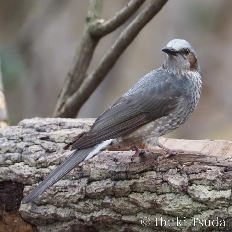
野幌森林公園やその周辺の住宅街に生息している。一年を通してみられる。 “ヒーヨヒーヨ”の大きな声でおなじみで、街中でもよく見かけることができる。 木の実や果実を好んで食べる。
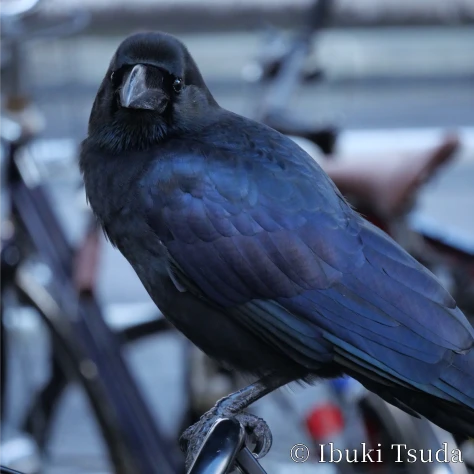
野幌森林公園やその周辺の住宅街に生息している。一年を通してみられる。 “カーカー”と鳴くカラスでおなじみで、街中でもよく見かけることができる。 雑食であり、様々なものを食べる。
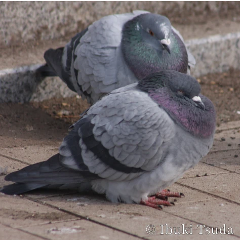
野幌森林公園その周辺の住宅街に生息している。一年を通してみられる。 よく“ドバト”という名でも親しまれる種。元は飼育用の種が野生化し定着したものである。
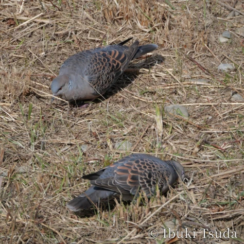
野幌森林公園その周辺の住宅街に生息している。一年を通してみられる。 “デデーポーポー”というような有名な鳴き方をするのがこの種。 カワラバトに比べ、林や森など閑散とした場所を好む。